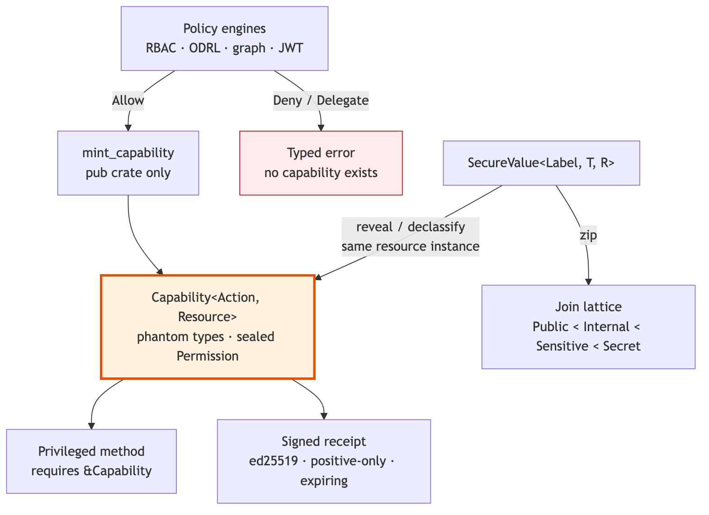

TypeSec’s thesis fits in one sentence: policies are encoded in types; violations are compile errors [4]. The mechanism is a capability whose existence is the proof of a permission check:
pub struct Capability<P: Permission, R: Resource> {
resource_id: ResourceId,
expires_at: Option<Instant>,
_permission: PhantomData<fn() -> P>,
_resource: PhantomData<fn() -> R>,
}Three properties make it unforgeable. The constructor is
pub(crate), so only the policy engine inside
typesec-core can create one; the type parameters are
phantom, so Capability<CanRead, Report> and
Capability<CanWrite, Report> are distinct types that
no cast relates; and the Permission trait is
sealed, so no external crate can invent a permission the engine
did not define. The only production path to a capability runs a policy
check and emits an audit event; a denial is a typed error, never a
capability. Rust’s ownership and trait coherence rules are what make the
argument sound: the language guarantees that a value of a
private-constructor type can originate only inside its defining module
[33, 34].
The consequence for API design is that a privileged method does not exist for code that lacks the capability:
impl Report {
pub fn write(&mut self, cap: &Capability<CanWrite, Report>, body: &str) { … }
}The “forgotten check” of guard-based systems becomes a missing
argument, which the compiler reports. The reviews of TypeSec confirmed
the invariant directly: Capability<P, R> has no
public constructor, mint_capability* is the only production
path, and sealed traits plus compile-fail (tests/ui) tests
guard the boundary [52].
Capabilities govern actions; SecureValue
governs data. Adapting SecLib’s Sec s a [22], a
SecureValue<L, T, R> carries a value of type
T, a privacy label L drawn from the sealed set
Public < Internal < Sensitive < Secret, and the
resource instance R it protects. Sensitive data can be
transformed while it stays inside the container; extracting it requires
an explicit typed capability:
pub fn reveal(self, cap: &Capability<CanReadSensitive, R>) -> Result<T, SecureAccessError>;
pub fn declassify(self, cap: &Capability<CanDeclassify, R>)
-> Result<SecureValue<Public, T, R>, SecureAccessError>;Both paths check that the capability was minted for the same
resource instance—a capability for customer/2 cannot
reveal data protected under customer/1 even though both
share the resource type—and both check that the capability lease is
still active. The container deliberately implements neither
PartialEq nor Debug over the inner value:
equality would be an oracle for guessing protected contents, and
Debug would print them into logs.
Combining labeled values is Denning’s lattice join [19], written as a trait with an associated type:
pub trait Join<Rhs: PrivacyLevel>: PrivacyLevel { type Output: PrivacyLevel; }All sixteen edges of the four-point lattice are enumerated; there is no blanket implementation, so the lattice is closed. The practical effect is the one the TypeSec memory work states as a rule: a summary of a Sensitive memory is born Sensitive; transformation does not launder it [53]. The authors are explicit that this is a small, deliberately incomplete information-flow language rather than a full noninterference proof; what it provides is the property that matters at the catalog boundary—derived data cannot silently drop below the label of its sources.
Runtime policy still exists. The PolicyEngine trait
accepts (subject, action, resource, context) and returns a
PolicyResult that is #[non_exhaustive] and
#[must_use = "policy decisions must be checked; an ignored result is a silent allow/deny"]—the
lint makes an unchecked decision a compiler warning:
Allow | Deny(reason) | Delegate(reason)Delegate means “this engine cannot decide; defer,” which
is what allows an RBAC engine, an ODRL engine, a graph engine, and
identity-provider adapters to be composed by a
ComposedEngine with AllowIfAll,
AllowIfAny, DenyOverrides (the XACML default
[24]), or PriorityOrder strategies. ODRL prohibitions
always override permissions, and the ODRL engine’s decision function is
pure—it returns the verdict and the audit events together—so the audit
trail is testable [4].
A decision can also be made portable. A signed decision
receipt is an ed25519-signed, short-lived token binding
(subject, action, resource, tool, call_id) with an expiry;
any downstream service holding the verifying key can check it offline,
with no shared policy file and no callback to the issuer. Receipts are
positive-only: only allowed decisions are worth carrying. This extends
the unforgeable-capability invariant across process boundaries in the
manner of Macaroons and Biscuit [28, 29], and it is the shape LakeCat
persists.
TypeSec’s identity layer, TypeDID, wraps agent messages in signed
envelopes whose auth_version fails closed when missing or
unknown at every gateway, and whose signing did:key
[31]—not a caller-supplied body field—is the policy subject.

Figure 2. In TypeSec the positive outcome of a policy check is a value that only the engine can construct; privileged code takes that value as an argument, and labeled data cannot leave its container without it.
LakeCat is a policy enforcement point, not an author of security semantics. Its governance seam is one method:
#[async_trait]
pub trait GovernanceEngine: Send + Sync + 'static {
async fn authorize(&self, request: AuthorizationRequest) -> LakeCatResult<AuthorizationReceipt>;
}The request carries a principal, a closed CatalogAction
enumeration (table-plan-scan, table-commit,
credentials-vend, policy-manage, and some
twenty others), an optional table, and a context document; the receipt
records the decision, the engine label, a policy hash, the context, and
the time. The TypeSec implementation composes an RBAC engine with an
optional fallback under PriorityOrder, and maps the verdict
fail-closed: only PolicyResult::Allow is allowed;
Deny and Delegate both become a
Forbidden error.
The receipt is then lifted into LakeCat’s own typed capability:
pub struct Capability<Action, Resource> {
receipt: AuthorizationReceipt,
resource: Resource,
_action: PhantomData<Action>,
}Its fields are private and it is mintable only through per-action
from_receipt constructors that reject a receipt unless
allowed is true, the action matches, and the resource scope
matches. Every privileged handler takes the typed capability, not a
boolean; as the second adversarial review put it, “an unauthorized path
cannot construct one” [54]. The order of operations in the request path
is fixed: verify TypeDID identity; load table-scoped policy bindings;
derive a read restriction (columns, row predicate, purpose, TTL cap) for
scan and credential-vend actions; build a context that
operation-specific context may extend but not overwrite; call the
engine; and fail closed.
This is where ODRL becomes operational. A policy may say a principal reads only certain columns, only for a purpose, only under a row predicate. LakeCat parses the minimal enforceable subset and fails closed on missing or deny-shaped operators, blank column lists, blank purposes, or disagreeing purpose sources; composition and reasoning stay in TypeSec.
Credential vending is the audited exception. Governed, Sail-planned
reads are the default for agents and untrusted principals. When a raw
credential must issue, TypeSec checks the credentials.issue
capability for the exact secret reference, LakeCat caps the TTL to the
tightest max-credential-ttl-seconds across all policy
locations, replaces issuer-supplied evidence with catalog-derived
values, and records only hashed prefixes.